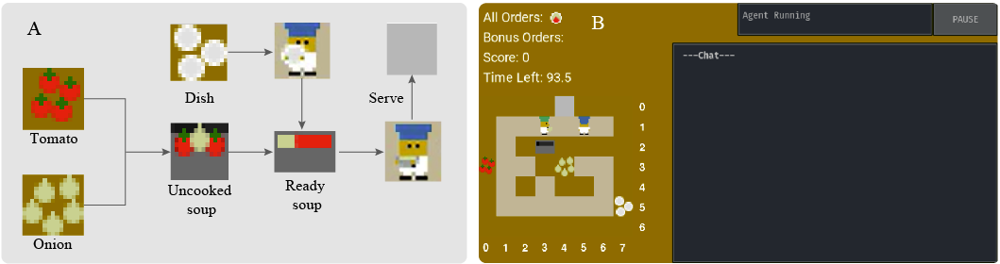
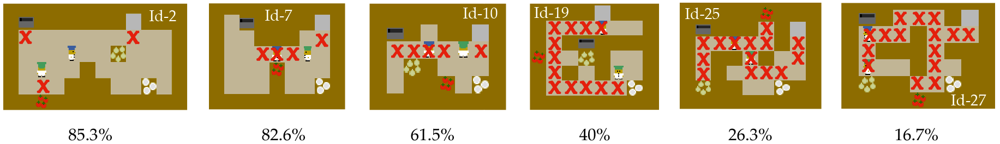
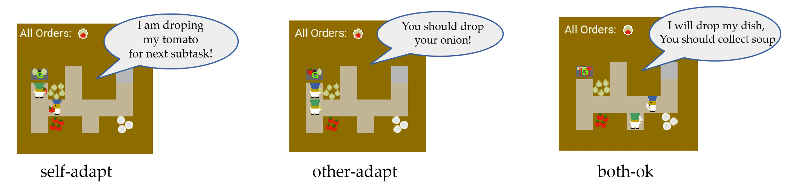
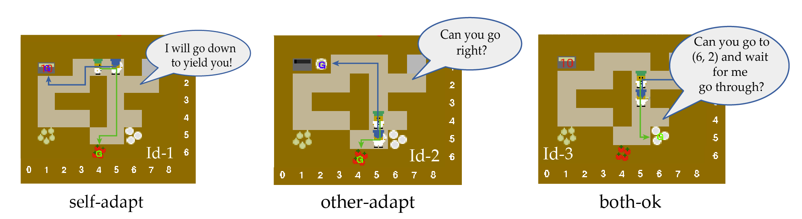
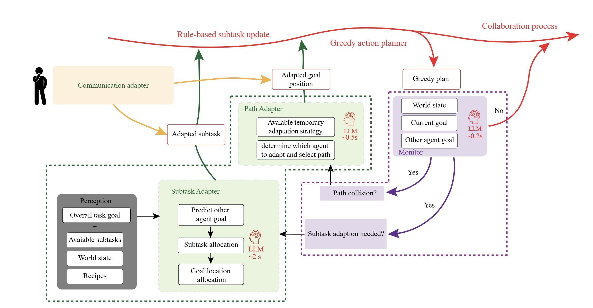
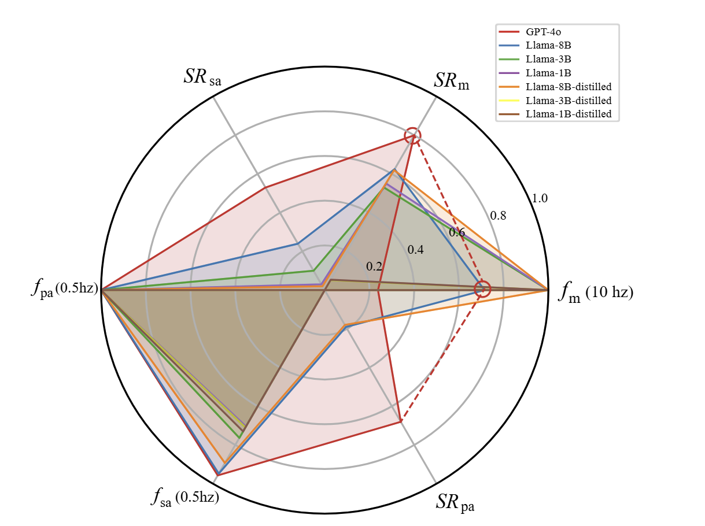
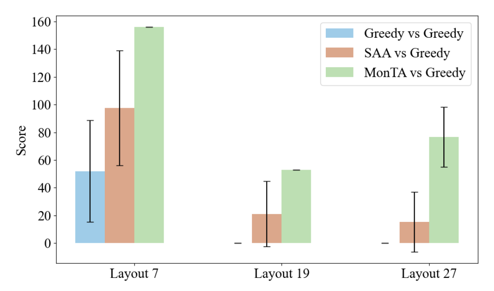
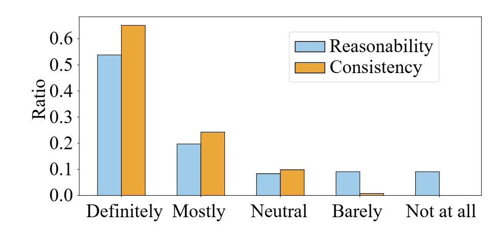

We focus on how an embodied agent can make proactive, real-time, and reasonable adaptations and instructions to humans during collaboration. Our work addresses the key challenges of substantial LLM inference latency and the need for clear rationale in adaptation strategies.
The Overcooked-AI environment is designed to test coordination skills of multiple agents or human agents. Agents work together in a layout to achieve higher scores by preparing and serving soups within a set time frame, following recipe-specific cooking procedures.

Left: The cooking procedure to finish one order. Right: The game interface used to test agents and conduct user studies.We designed 22 layouts with varying complexity and coordination demands, following teaming fluency metrics. Higher teaming fluency suggests open layouts where agents can operate independently, while lower fluency indicates confined layouts requiring adaptation.

Six selected representative layouts with different teaming fluency from 85.3% to 16.7%. The red cross represents a critical point that would interfere with another agent's workflow.We design scenarios that explicitly require different adaptation types to evaluate an embodied agent's ability to proactively adapt and guide its human partner.


Three representative subtask adaptation testing frames where the blue agent is giving language instructions.Inspired by human cognitive studies showing interchange between fast and intuitive thinking versus slow and deliberate thinking, we introduce MonTA agent which leverages fast and light LLM (System 1) to monitor and slow but powerful LLM (System 2) to generate detailed adaptation plans.

MonTA Framework. The framework comprises a real-time atomic monitor and two primary adapter modules: the subtask adapter and the path adapter. The monitor operates at high frequency to continuously assess collaboration status.We evaluate the trade-off between success rate and latency across different LLM models, demonstrating that our hierarchical approach effectively balances reasoning accuracy against inference speed.

LLM capability and latency evaluation. Success rates of determining whether adaptation is needed, generating subtask adaptation plans, and generating path adaptation plans; and corresponding average execution frequencies.Human experts found the suggestions generated by MonTA to be reasonable and consistent in nearly 75% of scenarios, indicating effective identification of adaptation needs and correct plan generation.

Language instruction evaluation results. Blue and yellow bars show the ratio of LLM instruction reasonability levels and the consistency of LLM suggestions reported by human experts.
Detailed evaluation of LLM-generated language instructions for each frame, showing human-reported reasonability and consistency scores.LLaMA 1B Model Demo
LLaMA 8B Model Demo
LLaMA 3B Model Demo
GPT Full Model Demo
Embedding Speed Demo